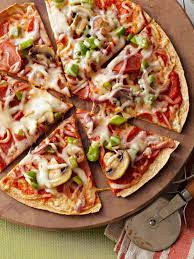

Pizza

Description
Pizza is one of the most famous dishes in the world, because is very fulfilling and tasty.
it's origin is very debated, because some say is fro china others from greece, but every knows that it comes from italy.
In italy food is taken very seriusly and pizza is the national food beside pasta.
The pizza in naples is especially known for being one of the best cities in the pizza industry
Ingredients
- 1/3 cup chopped bottled roasted red sweet pappers
- 1/3 cup pizza sauce
- 2 teaspoon olive oil
- 1/2 cup sliced red onions
- 1/2 cup chopped green sweet pepper(1 small)
- 1/2 cup sliced fresh mushrooms
- 2 10-inch whole grain tortillas
- 16 thin slices cooked turkey pepperoni (about 1/4 cup)
- 1 cup shredded part-skim mozzarella cheese(4 ounces)
Steps
- Place a pizza stone on the lowest rack of the oven. Preheat oven to 450°f.
- In a food processor or blender combine roasted red sweet peppers and pizza sauce. Cover and process or blend ultil smooth; set aside.
- In a large skillet heat oil over medium-high heat. Add red onion, green sweet pepper, and mushrooms. Cook and stir about 5 minutes or until tender.
- Spread pizza sauce mixture evenly on tortillas. Top with pepperoni and the cooked vegetable mixture. Sprinkle with cheese.
- Transfer one of the pizzas to the hot pizza stone.* Bake about 5 minutes or until edges of the tortilla and the cheese are golden brown. Repeat with the remaining pizza.
Return to main page